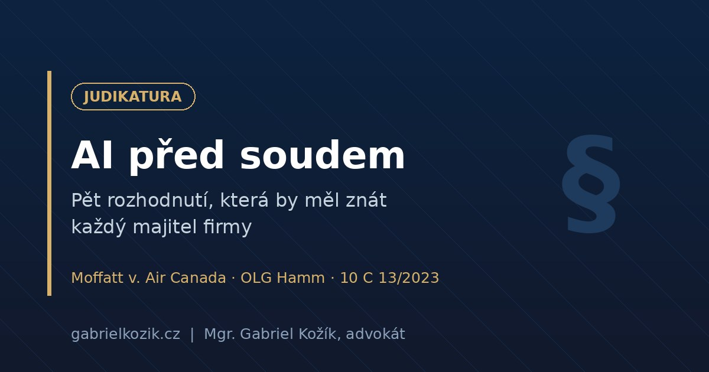

AI in Court: Five Rulings Every Business Owner Should Know

Artificial intelligence is usually discussed in the future tense: what will one day be regulated, who will one day get sued. Yet the case law already exists — courts and authorities have issued their first decisions, and they show very concretely who pays when AI gets it wrong. Here are five cases worth the attention of anyone who uses AI in business or is thinking about it. No hype, no scaremongering — just what actually happened and what it means.
1. "We're not liable for the chatbot." Yes, you are. (Moffatt v. Air Canada)
Mr. Moffatt needed to fly to his grandmother's funeral. The chatbot on Air Canada's website advised him to buy a full-price ticket and claim the bereavement discount retroactively within 90 days. Except that wasn't true — the airline's actual rules did not allow retroactive discounts, and Air Canada refused to pay.
Before a Canadian tribunal, the airline then presented a defence for the history books: the chatbot, it argued, is "a separate legal entity that is responsible for its own actions." The tribunal rejected it. A company is responsible for all information on its website — whether it comes from a static page or from AI. The awarded damages of CAD 812 are a trivial sum, but the principle is fundamental: hiding behind a chatbot doesn't work.
2. The European version: the chatbot speaks for the company (OLG Hamm)
If Canada feels far away, the Higher Regional Court in Hamm has an answer. A German clinic's chatbot told customers that its doctors were specialists in plastic surgery. They weren't. In May 2026 the court ruled that a chatbot is an integral part of the business organisation — the company is liable for its statements as if it had made them itself. The ruling is not yet final (an appeal was admitted), but the direction matches the Canadian case.
And in the Czech Republic? No court has decided such a case yet, but legal doctrine derives liability from the general rules of the Civil Code — among others, liability for one's helpers (Section 2914). A tool that communicates on your behalf is still, legally, your communication.
3. GDPR applies to AI today: million-euro fines from Italy
While we wait for the first Czech AI case, the Italian data protection authority is already handing out penalties. The operator of the AI companion Replika was fined 5 million euros — the chatbot processed personal data without a legal basis and without age verification.
The OpenAI saga is instructive too. In December 2024, the Garante fined OpenAI 15 million euros over ChatGPT's non-compliance with the GDPR — citing a failure to report the March 2023 data breach, insufficient transparency, a missing legal basis for training the model on personal data, and the absence of age verification. It also ordered a six-month public information campaign in Italian media. But in March 2026, a Rome court cancelled the fine. That, too, is part of the picture: regulators act, yet their decisions face judicial review, and the interpretation of the rules for generative AI is still settling. The takeaway? The risk of enforcement is real, but the uncertainty is even more real — and the only preparation for that is order in your own data and processes.
What matters for Czech companies is that the GDPR is identical across the EU. And the Czech data protection authority has shown it can impose heavy fines in the Avast case (CZK 351 million) — not an AI case, but proof of how seriously large-scale data processing is taken. Here, too, it pays to follow the developments: in a judgment of 30 September 2025 (case no. 5 A 56/2024), the Municipal Court in Prague annulled the fine — it upheld the finding of a violation, but held that the amount of the fine was insufficiently reasoned. The authority filed a cassation complaint, now pending before the Supreme Administrative Court under case no. 4 As 220/2025. The principle stands; the dispute is about the size of the penalty. Whoever feeds client data into AI tools without a legal basis today is not risking "sometime in the future". They are risking now.
4. Your competitor may freely take your AI visuals (Municipal Court in Prague)
The only direct Czech AI judgment so far concerns copyright. An entrepreneur had an image generated in DALL-E, a competitor copied it, and he claimed copyright protection. He lost. The Municipal Court in Prague (case no. 10 C 13/2023) held that an AI-generated image is not a copyrighted work — it lacks the creative activity of a natural person. A prompt is merely an "idea", not a work.
Your AI graphics and copy enjoy no protection of their own — competitors may legally take them. And conversely: when an AI output infringes someone else's rights, the person who published it is liable. That is you.
The boundary is not absolute — creative human input in editing an output may establish protection, but it is assessed case by case. The practical takeaway for marketing: don't build key visuals and copy on raw AI outputs alone, and cover the agency relationship contractually.
5. Professionals aren't immune either: CZK 25,000 for invented case law
Lest I pick on entrepreneurs only — an example from my own profession. In December 2025, a Prague attorney filed a constitutional complaint drafted with the help of AI. It cited twelve decisions of the Constitutional Court and the European Court of Human Rights; a substantial number of them did not exist and the rest were grossly distorted. The result: a procedural fine of CZK 25,000 (Constitutional Court decision, case no. I. ÚS 3004/25, of 1 December 2025). The defence that a paid professional AI tool had been used did not help. The person who signs the document is always responsible for its content.
What is changing right now (as of July 2026)
Alongside the rulings, legislation is moving faster than most companies realise. From 2 August 2026 — a few weeks from now — the transparency obligations under Article 50 of the AI Act take effect: chatbots must "admit" they are AI, and AI-generated content including deepfakes must be labelled. I covered the practical side of labelling and the European Commission's new Code of Practice in detail in How to Properly Label AI-Generated Content?
June's Digital Omnibus package did postpone the obligations for high-risk systems (HR screening, scoring, credit decisions) to December 2027 and August 2028 respectively — but beware: a postponement is not a pardon, and it does not touch transparency, the prohibited practices or the GDPR at all. And by 9 December 2026 the Czech Republic must transpose the new Product Liability Directive (EU) 2024/2853, which puts software and AI on a par with physical products: strict liability regardless of fault, and a rebuttable presumption of defect where a system behaved "abnormally".
Conclusion: what this means for your business
The common denominator of all five cases is the same: liability for AI never rests with the tool, but with whoever used it. In practice this means five things. Every AI output that goes to a client should be approved by a person who understands it and can stop it. Your company should have internal rules on who may enter what into which tools — personal data and know-how above all. Contracts with agencies, suppliers and clients should say who is responsible for AI outputs. You need to know whether you are a user or already a "provider" of an AI system — your own brand on a chatbot or a modified model means a different league of obligations. And keep records: logs, versions, who approved what. From December, a presumption of defect may apply in a dispute — and the burden of proof will be on you.
Running a chatbot, using AI for marketing, or feeding client data into AI tools? I'll gladly walk through your risk points with you — the first 30 minutes are free and in plain language.
Book a consultationSources and further reading:
- Moffatt v. Air Canada, 2024 BCCRT 149 (Civil Resolution Tribunal, British Columbia)
- OLG Hamm, case no. I-4 UKl 3/25, judgment of 12 May 2026 (not final)
- Decision of the Italian Garante in the Replika matter (5/2025)
- Garante decision in the OpenAI matter (12/2024, €15 million fine — cancelled by a Rome court, 3/2026)
- Municipal Court in Prague, case no. 10 C 13/2023, judgment of 11 October 2023
- Constitutional Court, case no. I. ÚS 3004/25, decision of 1 December 2025
- Avast case: Municipal Court in Prague, case no. 5 A 56/2024, judgment of 30 September 2025; cassation proceedings before the Supreme Administrative Court, case no. 4 As 220/2025
- Regulation (EU) 2024/1689 (AI Act), in particular Articles 25, 26 and 50
- Directive (EU) 2024/2853 on liability for defective products
- Act No. 89/2012 Coll., Civil Code (Section 2914)